Full walkthrough from the 2026-04-22 8:08 PM screen recording: new user activates trial, uses it, then cancels
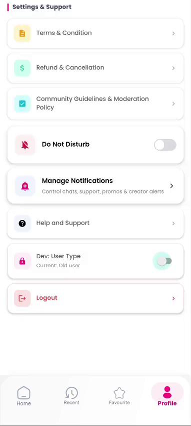
⬅ Dev toggle (OFF = Old) Current: Old userScreen: ProfileFragment (scrolled)
Recording starts on the Profile page with the Dev: User Type row showing Current: Old user (toggle OFF). This is the QA entry point used to simulate the new-user experience without re-creating an account.
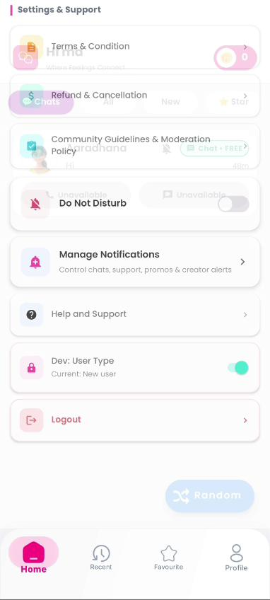
⬅ Toggle ON = New Current: New userTransition during recording (frame 10s)
After flipping the switch, the status text updates to Current: New user and the toggle turns green. Home behavior will now use the new-user branch on all entry points.
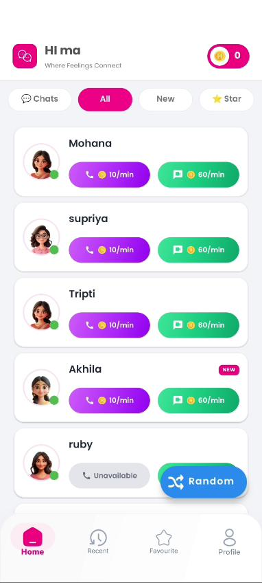
⬈ coins badge (0) ⬅ Paid Call 10/minScreen: HomeFragment (All tab)
Back on Home, coins badge shows 0. Creator list (Mohana, supriya, Tripti, Akhila, ruby...) renders with paid purple Call 10/min and green Chat 60/min buttons. No Free Call chip because trial is not active.
isNewUser() == true.
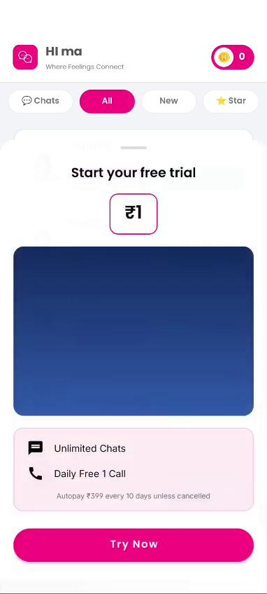
⬇ Start your free trial ⬅ ₹1 price badge ⬇ Try Now CTATrigger: tap coin badge on step 3
A full-screen bottom sheet slides up: Start your free trial with a ₹1 price badge, a dark blue hero area, benefits Unlimited Chats · Daily Free 1 Call, and small print "Autopay ₹399 every 10 days unless cancelled." Big pink Try Now CTA at the bottom.
DummySubscriptionActivity
(subscription activation screen).
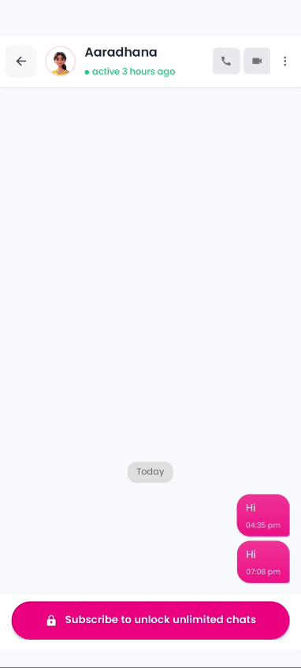
⬇ Chat opened ⬅ Trial "Hi" bubbles ⬇ 🔒 Subscribe pillScreen: ChatActivity (non-subscribed state)
Opening a creator chat shows two previous "Hi" bubbles (04:35 pm, 07:08 pm) but the message input is replaced by a pink 🔒 Subscribe to unlock unlimited chats pill pinned to the bottom. The header call/video icons are visible.
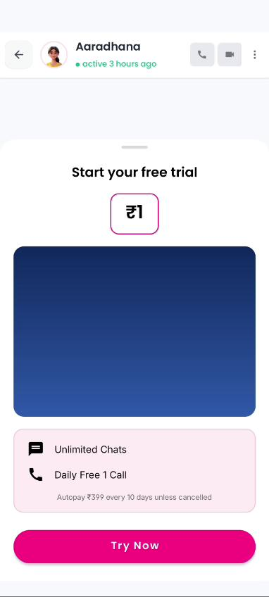
⬇ Same trial sheet ⬇ Chat visible above ⬇ Try NowTrigger: tap the pink pill on step 5
The exact same Start your free trial · ₹1 sheet opens over the chat screen (chat partially visible at the top). This is the only subscribe entry point a new user ever sees — no yellow "Subscribe Now ₹399" banner like the old-user flow has.
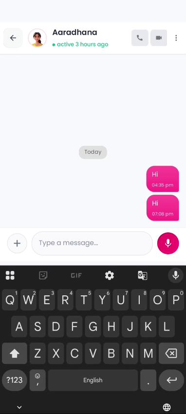
⬇ Subscribed — input unlocked ⬇ Type a messageScreen: ChatActivity (subscribed, keyboard open)
After the user tapped Try Now and subscription activated, the pink pill is replaced with the real input bar: + attach · Type a message... · pink mic. System keyboard is up. Both "Hi" bubbles remain in thread history.
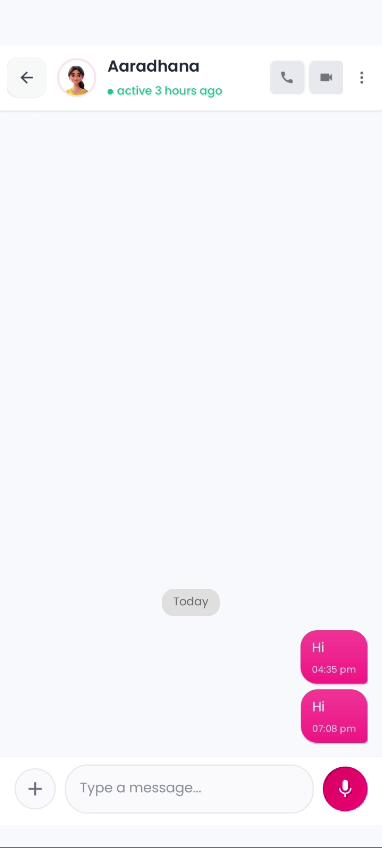
⬅ Sent bubbles ⬇ Input idle · no pillScreen: ChatActivity (keyboard dismissed)
With the keyboard closed, the full thread reads: Hi 04:35 pm · Hi 07:08 pm right-aligned pink bubbles. Input bar at the bottom, ready for the next message. The pink pill is permanently gone on this thread while subscription stays active.
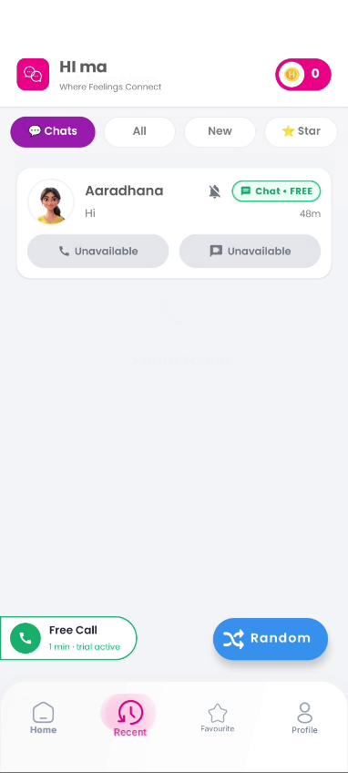
⬇ Free Call · trial active ⬅ Chat · FREE badgeScreen: HomeFragment (Chats tab)
Back on Home, the green Free Call · 1 min · trial active chip sits at the bottom-left. The Aaradhana chat card now carries a green Chat · FREE badge. Bottom tabs show the user was previously on Recent before returning to Home.
MaleCallAcceptActivity-style screen).
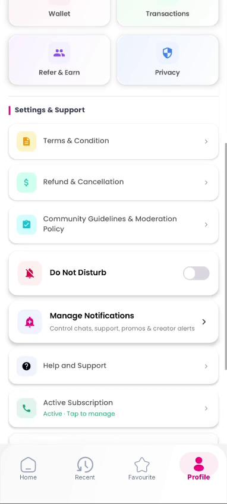
⬇ Active · Tap to manageScreen: ProfileFragment (scrolled)
Profile now shows a green-tinted Active Subscription row under Settings & Support with subtitle "Active · Tap to manage". The trial/subscribe entry row is no longer visible (hidden when active).
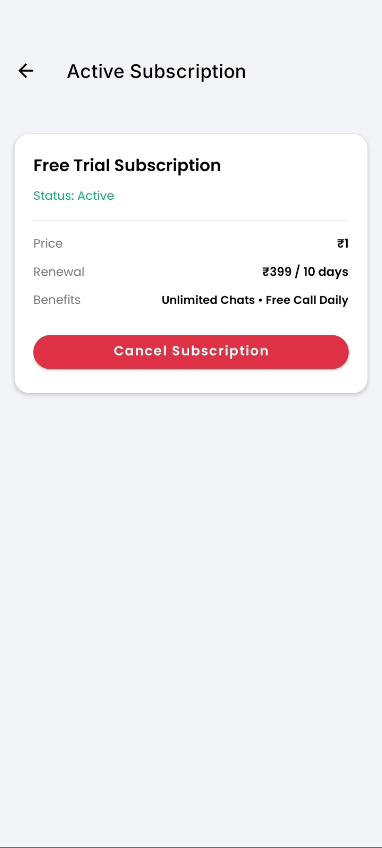
⬇ Free Trial Subscription ⬇ Status: Active ⬇ Cancel SubscriptionScreen: CancelSubscriptionActivity
Title Active Subscription. Card: Free Trial Subscription · Status: Active · Price ₹1 · Renewal ₹399 / 10 days · Benefits Unlimited Chats · Free Call Daily, and a red Cancel Subscription button.
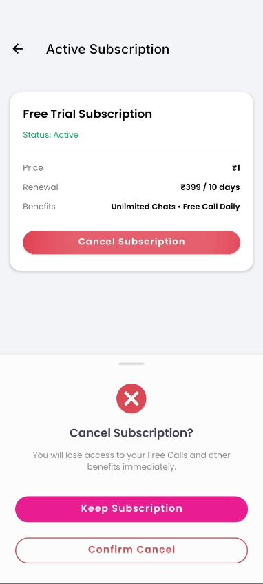
⬇ Cancel Subscription? ⬅ Keep ⬅ Confirm CancelTrigger: Cancel Subscription button on step 11
Bottom sheet: Cancel Subscription? with body "You will lose access to your Free Calls and other benefits immediately." Two buttons: pink Keep Subscription (primary, safe) and outlined red Confirm Cancel (destructive).
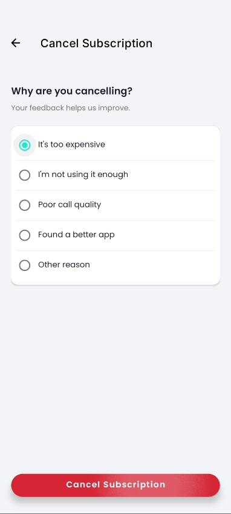
⬇ Why are you cancelling? ⬅ Reason selected ⬇ Final Cancel buttonScreen: Cancel-reason form after Confirm Cancel
A second screen asks Why are you cancelling? with single-choice options: It's too expensive · I'm not using it enough · Poor call quality · Found a better app · Other reason. One radio is preselected (green). Large red Cancel Subscription at the bottom commits the cancel.
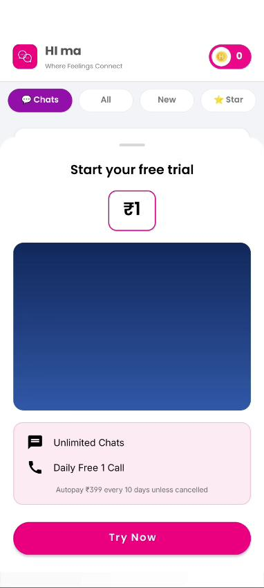
⬇ Start your free trial ⬅ ₹1 againHome coin tap after subscription cancelled
With the Dev toggle still set to New user, tapping the coin badge on Home re-opens the same Start your free trial · ₹1 sheet. The user is back at the very beginning of the funnel — fresh signup experience.
KEY_EVER_ACTIVE flag makes this user an
old user after cancel, so they'd see the Wallet screen
instead — see the Old User Flow doc. This video was recorded before
that change and uses the Dev override.
Source: WhatsApp Video 2026-04-22 at 8.08.56 PM.mp4
(50.6 s, 382×848, 43.64 fps, 45 sampled frames). Steps 1–14 selected
to cover every distinct screen in the new-user journey.
Compare with the Old User Flow: the critical difference is that old users see the yellow Subscribe Now ₹399 banner (Wallet, insufficient-talktime sheet, chat sheet) while new users always see the Start your free trial ₹1 sheet.